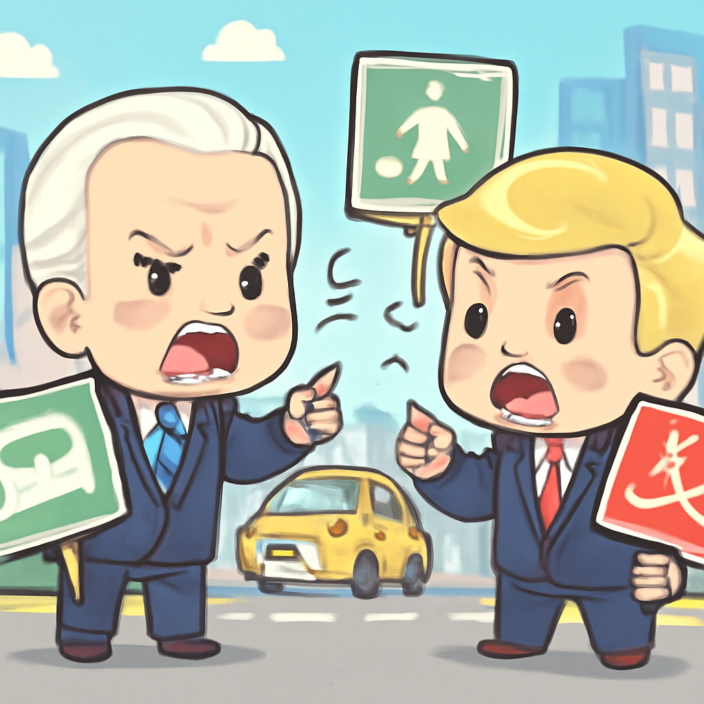

其一 · 伊朗 · 霍爾木茲海峽控制權聲明加強
伊朗發布地圖宣稱控制霍爾木茲海峽
在伊朗首都德黑蘭，伊朗政府近日發布了一張地圖，聲稱對超過22,000平方公里的霍爾木茲海峽擁有"武裝部隊監督"的控制權。這一聲明引發了國際社會的關注，因為霍爾木茲海峽是全球重要的石油運輸路線，對全球經濟影響深遠。看來這波操作不僅是地圖上的遊戲，還可能影響到油價的波動！
🔗 原始新聞 ↗
2026-05-22 · 以古觀今，以笑抗愁
伊朗發布地圖宣稱控制霍爾木茲海峽
在伊朗首都德黑蘭，伊朗政府近日發布了一張地圖，聲稱對超過22,000平方公里的霍爾木茲海峽擁有"武裝部隊監督"的控制權。這一聲明引發了國際社會的關注，因為霍爾木茲海峽是全球重要的石油運輸路線，對全球經濟影響深遠。看來這波操作不僅是地圖上的遊戲，還可能影響到油價的波動！
🔗 原始新聞 ↗
沃爾瑪警告美國消費者削減開支
美國零售巨頭沃爾瑪最近發出警告，隨著油價上漲，消費者的支出預計將大幅減少。這對美國經濟的影響不容小覷，尤其是在即將到來的假期季節，消費者口袋的"精打細算"將成為熱門話題。看來，油價不只影響車子的油箱，還影響了我們的購物車！
🔗 原始新聞 ↗
烏干達暫停與剛果的航班以應對疫情
烏干達政府宣布，因應剛果民主共和國的伊波拉疫情擴散，將暫時停止與剛果的航班。此舉旨在防止疫情進一步蔓延，保障國內民眾的安全。隨著疫情的警報響起，大家都希望能夠遠離"病毒"的陰影，保持健康！
🔗 原始新聞 ↗
法國法院判決空客與法航因空難負責
法國法院今天做出判決，空客和法航因2009年空難被判過失殺人，造成228人喪生。這一判決引發了社會的廣泛關注，安全問題再次成為航空業的焦點。希望未來能夠在高空中安心飛行，不再有類似的悲劇發生。
🔗 原始新聞 ↗
柏林的車輛政策引發文化戰爭

在德國柏林，隨著市政選舉的臨近，保守派和進步派就市中心的交通擁堵問題展開激烈辯論。這場"車輛文化戰爭"不僅關乎交通，更是對於城市未來發展的深層次討論。看來，這場戰役不僅是關於車的多或少，更是對於生活方式的選擇！
🔗 原始新聞 ↗